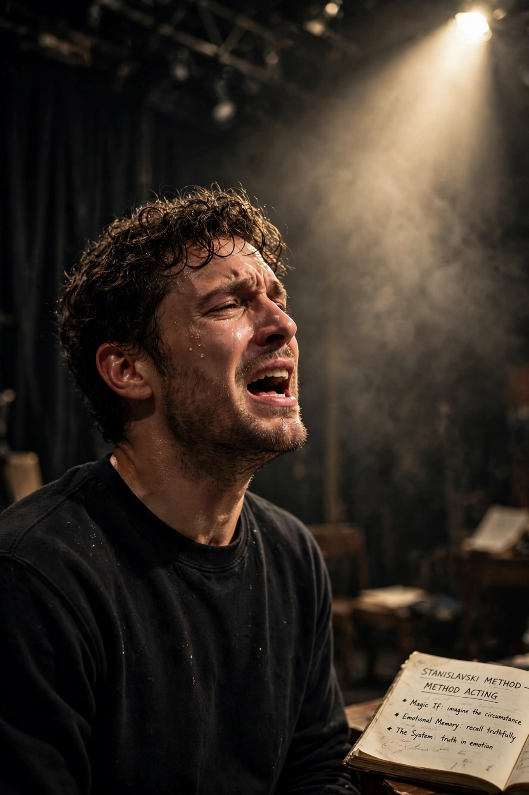

Method acting, known as the Method, is a range of rehearsal techniques in which actors seek sincere and emotionally expressive performances by fully inhabiting the role, drawing on Konstantin Stanislavski's system.

Developed in the US by Lee Strasberg, Stella Adler and Sanford Meisner from Stanislavski, via the Group Theatre and Actors Studio. Strasberg emphasised affective memory; Adler stressed imagination and given circumstances; Meisner repetition and behaviour.
Marlon Brando, James Dean, Marilyn Monroe, Robert De Niro, Al Pacino, and Daniel Day-Lewis are associated with Method approaches.
Critics note risks to mental health, on-set difficulty, and misconceptions equating the Method with extreme immersion.